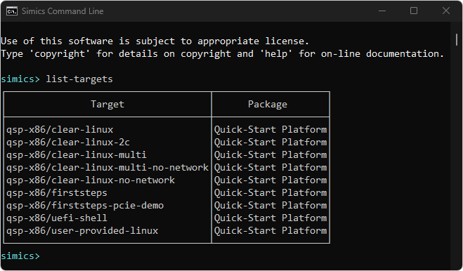
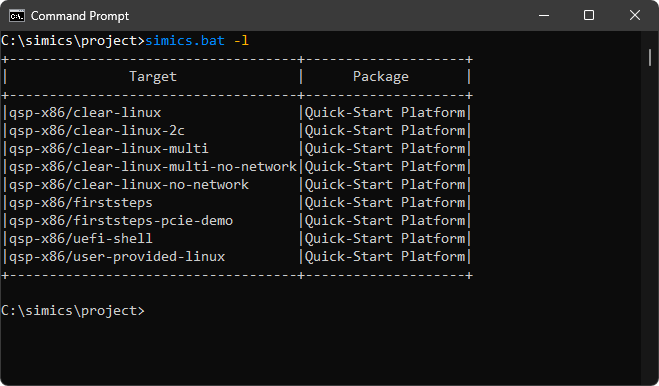
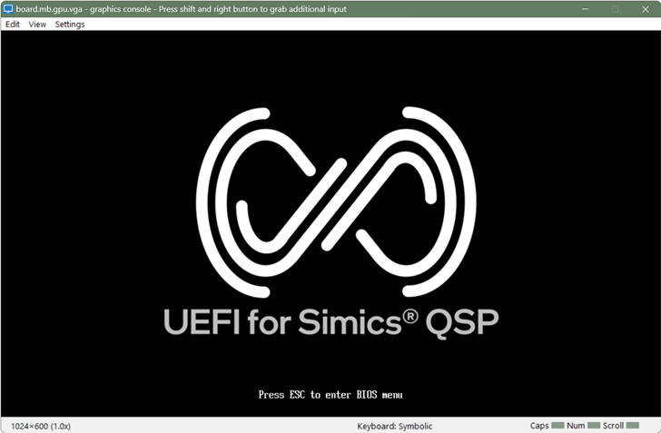
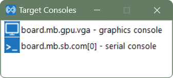
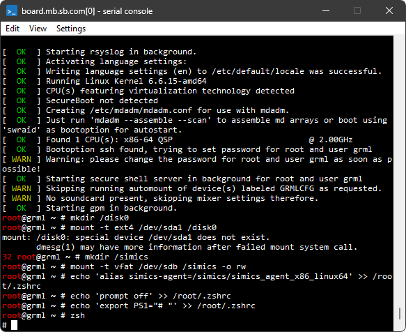
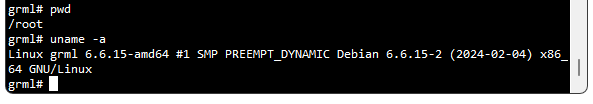

Before loading the qsp-x86/firststeps target, let us first verify that this target is available in our project.
To list available targets, run list-targets and verify that you see the target qsp-x86/firststeps in the listing:

It is also possible to list targets without starting an interactive session,
by starting the simulator with the -l argument.

If you don't see qsp-x86/firststeps, you need to make sure that you have
installed the QSP-x86 (#2096), and that it is available in the project as an
add-on package. Read more about installing the simulator in the
installation section.
Now that we have verified that the qsp-x86/firststeps target is available, we will load it:
A few new windows have popped up after a target machine has been created.
Initially the consoles are blank, but the below screenshots are taken from a later time in the simulation to show something more interesting.
board.mb.sb.com[0] - serial console - Figure 2
a text terminal window connected to a serial port of the target machine
board.mb.gpu.vga - graphics console - Figure 3
a graphical display window connected to a graphical device of the target machine
Target Consoles - Figure 4
a utility window which allows showing or hiding the target consoles
Figure 2. A text terminal window connected to a serial port of the target machine

Figure 3. A graphical display window connected to a graphical device of the target machine

Figure 4. A target console control window:
One of the ways to start the simulation of the newly created target machine is to use the run command.
Start the simulation with the run command:
simics> run
running>
There may be messages printed in the CLI window:
These messages are coming from models which, as messages report, may not simulate certain features. Many target models use a pragmatic approach and don’t simulate features which are not relevant for simulated machines, for example, thermal control. So, the messages are usually harmless.
As simulation progresses, the target machine will boot Linux operating system (this can take up to several minutes):

The login to the system is done automatically. After the login, one can interact with the operating system running on the target machine by running commands at the text console window. Here is a sample session when pwd and uname -a Linux commands were executed on the simulated machine after the login:

One can stop simulation, thus pausing a target machine, by running the stop command:
running> stop
simics>
The target machine is paused now. But it can be resumed by entering the run command:
simics> run
running>
To see other ways of starting and stopping the simulator, run help with
the Execution category:
simics> help Execution
...
run start execution
run-cycles start execution
run-seconds execute for seconds
...
For further information, see the help command section.


{kind=link}
{kind=link}
{kind=link}